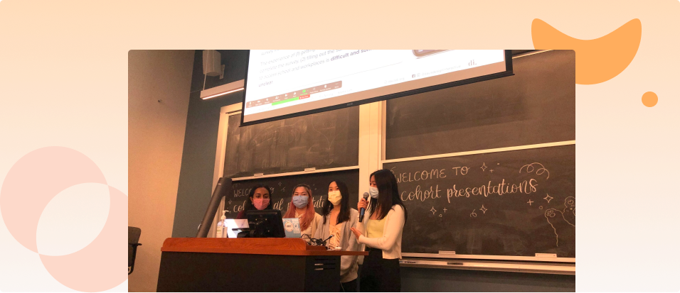

Cynthia Chen
About
Hi! I’m Cynthia, a User Researcher, currently in the Bay Area. I have a deep love for insight — my favorite moments are those "aha!" moments, no matter the topic. I'm a knowledge gatherer by heart! I'm challenged when I get to think about ambiguous problems, figure out ways to tackle them, and understand experiences I’ve never related to before.
Most recently I was at Salesforce, where I was an Associate User Researcher helping bring to life what the integration between Salesforce and Slack might look like post-acquisition. While I was in undergrad, I was a UX Research intern at HBO Max, UC Davis, and Salesforce (again), where I got to understand problems of all shapes and sizes, for users from TV-watchers to Sales Reps.
I'm currently on the lookout for User Research roles based remotely or in the Bay Area!
Work

Email Communications @ Salesforce (Research & Insights Intern)
How effective and understandable are service change emails for small-mid business Salesforce Administrators given the lack of Salesforce support they might have?

Content Recommendations @ HBO Max (UX Research Intern)
How might we improve movie & series recommendations for users landing on the homepage?

Design Interactive @ UC Davis (Co-Founder)
How can we fill the UX education gap on campus, given the increasingly high demand of students interested in the field yet the little amount of classes and resources in UX?
Things I'm Enjoying
Currently reading
Bad Blood by John Carreyrou
Pachinko by Min Jin Lee
Currently listening to
Modern Love by The New York Times
Conan O'Brien Needs a Friend by Team Coco
Currently attempting to
imagine i'm hiking outdoors
do a mini ny times crossword a day